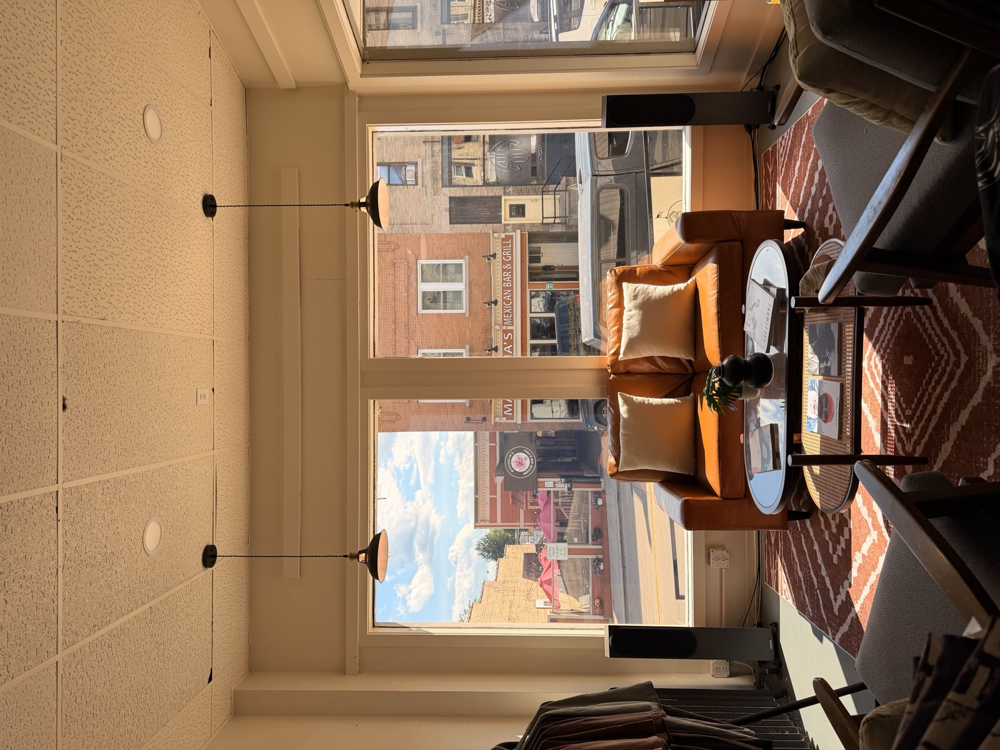

The short version: Your price comes from five things: how many pieces you order, how many colors are in the design, where and how big it prints, what garment it prints on, and any extras like rush or retail finishing. Quantity and color count do most of the work. Change those two and your cost per shirt moves the most.
1. Quantity: Why 100 Shirts Cost Less Each Than 25
Every screen printing job has fixed work up front, whatever the order size. Before the first shirt hits the press, we:
- Coat and expose a screen for every color
- Mix and match each ink
- Register the screens so every color lines up
- Run test prints until it's dialed in
- Tear it all down and clean up afterward
That's the same amount of work whether we print 24 shirts or 500. Spread across more pieces, it disappears into the per-shirt price. That's why our rates drop at each quantity break, and why the jump into the next tier is often worth it.
We don't enforce strict minimums. Small brands and first runs are a big part of who we print for. But around 48 pieces is where the setup work stops dominating the price. If you're at 36, ask us what 48 would cost. The total often barely moves.
2. Colors: One Screen Per Color
This is the factor people underestimate most. Screen printing lays down one color at a time, and every color needs its own screen, its own ink, and its own pass on the press. So a 4-color design takes four times the setup of a 1-color design and more press time on every shirt.
Setup and ink are charged per color, per print location. A 3-color front and a 1-color back means four screens, not three.
The Hidden Color: Dark Garments
Water-based ink soaks into the fabric. That's why it feels so soft, but it also means colors disappear on a black or navy shirt unless we print a layer of white first. That white underbase counts as an extra color. A 2-color design on a black tee is really a 3-color print.
Design Tip: Let the shirt do some of the work. Knocking out parts of the design so the garment color shows through can drop a color entirely, and it often looks better. We cover this more in our artwork prep guide.
3. Print Size & Location
Where the print goes and how big it is both affect your price:
- Standard prints (up to 15" × 18"): Covers most fronts, backs, and left-chest logos.
- Jumbo prints (up to 17" × 23"): Nearly edge-to-edge on the front or back. It takes bigger screens, more ink, and slower press work, so it costs more per piece than standard. Most shops can't print this size at all.
- Additional locations: Each extra spot (back, sleeve, hood) is another setup and another trip through the press. A simple 1-color sleeve or back hit adds less than you might think.
4. The Garment Itself
The blank shirt is usually the biggest single line on your quote, and the one with the widest range. A basic cotton tee and a heavyweight garment-dyed tee can look similar in a photo and cost very different amounts.
What Changes Garment Cost
- Brand and weight: Heavier, premium blanks cost more and feel more substantial.
- Style: Hoodies and crewnecks cost more to buy and more to print. Fleece takes extra time and materials on press.
- Size mix: 2XL and up usually cost more from the supplier.
- Color: Some colorways carry a premium, and dark colors may need that underbase.
How We Bill for Blanks
We source garments for most orders, and we bill them at our cost plus a sourcing and handling fee. Here's what that fee covers:
- Ordering from suppliers and tracking shipments
- Receiving, counting, and checking every piece against your size breakdown
- Inspecting for defects before anything gets printed
- Replacing misprints or defective blanks at no charge to you
That last one matters. If a shirt shows up with a flaw or something goes sideways on press, that's on us, not you.
We can print on blanks you supply, but check with us before ordering. Water-based ink needs cotton or cotton blends (no 100% polyester), and garments should be pre-washed. Read why we only print water-based for the details.
5. Extras & Add-ons
These are optional, but they show up on quotes, so here's what each one is:
- Specialty inks: Puff, metallic, glow, and high-density inks add a per-piece charge.
- Rush production: Need it faster than our standard 2–3 weeks? Rush is available depending on our schedule, at a premium.
- Retail finishing: Printed neck tags, fold and poly bagging, hang tags, and fulfillment. All à la carte, so you only pay for what your launch actually needs.
- Embroidery digitizing: For embroidered pieces, there's a one-time fee to turn your logo into a stitch file. You pay it once per design, never again on reorders.
Same Design, Two Ways
Here's how much design and garment choices matter. Picture one band logo printed for a 50-piece merch run:
| Option A | Option B | |
|---|---|---|
| Garment | Black hoodie | Natural tee |
| Design | 4 colors, front + back | 2 colors, front only |
| Underbase | Yes, front and back | No (light garment) |
| Screens | 10 | 2 |
| Relative cost | Highest: more screens, fleece, pricier blank | A fraction of Option A per piece |
Neither option is wrong. They're different products at different price points. The point is that a few decisions early in the design process drive most of the final number.
How to Get More Shirt for Your Money
- Cut a color. Most designs can lose one without anyone noticing. It's the easiest savings there is.
- Use the shirt color. Knockouts and tonal designs reduce screens and look great in water-based ink.
- Pick light garments for multi-color designs. No underbase means one less color per location.
- Hit the next quantity break. Sometimes a few more pieces lowers the price of every shirt.
- Plan reorders. We keep your screens on file, so reorders of the same design skip the setup fees entirely.
- Avoid rush. Order 3–4 weeks before you need it and you'll never pay for speed.
What to Watch for When Comparing Quotes
A lower per-shirt number isn't always a lower total. When you compare shops, check:
- Are setup and screens included or extra? Some quotes leave them off the headline price.
- Is the underbase counted? If not, the price on dark shirts will go up later.
- Who covers misprints? Some shops pass the cost of replacement blanks on to you.
- What ink are they using? Plastisol and water-based are very different products. Compare like for like.
- Are reorders cheaper? If they don't keep screens, you pay setup every time.
Once you approve your mockup and quote, a 50% deposit starts production. The balance is due before shipping or pickup. Quotes are confirmed after we review your garment style, print locations, artwork, and quantities, so the number you approve is the number you pay.
Want a Real Number?
Use our online estimator for an instant ballpark, or send us your design and we'll put together an exact quote. No obligation.